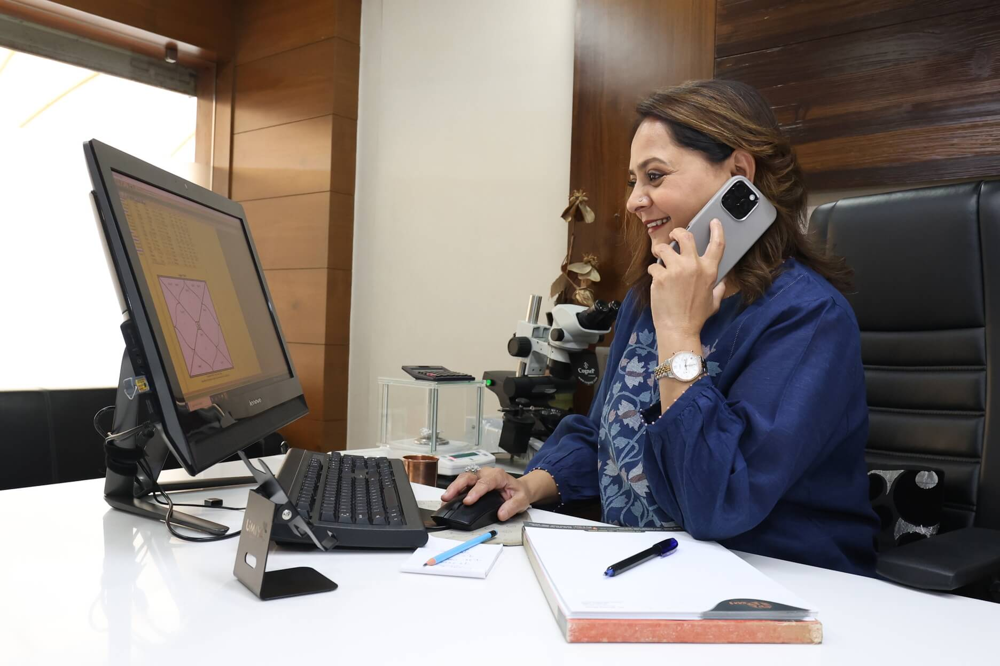

Possibility over prediction
A chart does not remove choice. It reveals tendencies, timing, strengths, and possibilities so that decisions can be made with greater awareness.
About Dr. Sunnita Bhatt
About me
Dr. Sunnita Bhatt believes that a birth chart reflects the subtle relationship between thoughts, behaviour, expression, health awareness, inner chemistry, and the choices a person makes through life. When interpreted with depth, astrology becomes a way to pause, reflect, and understand yourself more clearly.
Her work is grounded in the belief that you cannot simply become an astrologer; for some, it is a calling. Raised in a deeply spiritual family with an astrologer father, she felt drawn from childhood to understand the language of the Universe and the patterns connecting body, mind, and soul.
What began as an early calling developed into formal study, disciplined practice, and a lifelong commitment to guiding people without fear or rigid prediction.
A practice built through trust

The journey
Dr. Sunnita began her professional practice in Bharuch in 1996 and later established her office in Vadodara. Since then, she has guided more than 135,000 clients across 10+ countries through private, chart-based consultations.
Each person, chart, and life story has strengthened her belief that astrology is a divine gift: a way to reconnect with yourself, realign with your rightful path, and live with greater purpose, peace, and confidence.
Her academic foundation as a PhD and Jyotish Visharad from MS University supports a practice shaped equally by traditional knowledge, close observation, intuition, compassion, and decades of real conversations.
Her philosophy
A chart does not remove choice. It reveals tendencies, timing, strengths, and possibilities so that decisions can be made with greater awareness.
Every reading considers the person behind the placements: their questions, responsibilities, emotions, circumstances, and stage of life.
The purpose is not repeated reassurance or fear. It is to help people trust their judgment, understand patterns, and move forward responsibly.
Knowing yourself is not a luxury. It is a responsibility that can begin a more fulfilling, joyful, and meaningful relationship with life.
A complete practice
Dr. Sunnita's work brings Vedic Astrology, Medical Astrology, Numerology, Vastu, and Astrological Counselling into one thoughtful practice. She does not interpret one placement in isolation; she studies the complete pattern and the person living through it.
Clients seek guidance during relationship decisions, career changes, business planning, financial transitions, family responsibilities, wellbeing concerns, and periods of personal or spiritual growth. Every consultation is private, prepared personally, and explained in clear language.
Explore consultations ↗
The mission
Dr. Sunnita's mission is simple: to help you understand the secrets hidden within your birth chart, connect with your soul, and reconnect with your own frequency. The right guidance can help you find your rhythm, move with your natural flow and energy, and replace unnecessary worry with clarity and direction.
The stars do not ask you to stop living or surrender responsibility. They invite you to understand yourself deeply enough to live more fully.
Begin a conversation ↗